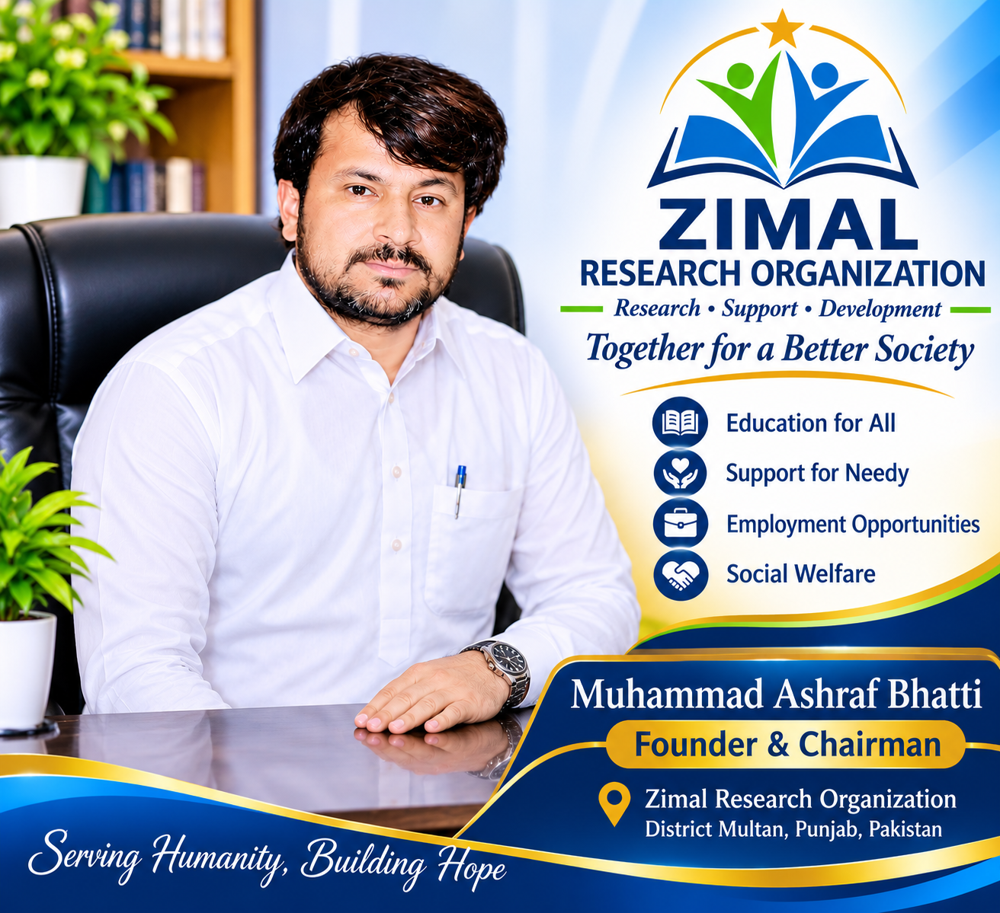

01
Family Support
Helping families facing hardship with essential support and dignity.
DISTRICT MULTAN · PUNJAB · PAKISTAN
Working towards a future where every child can learn, every family can live with dignity, and every person can find an opportunity.
WHO WE ARE
Zimal Research Organization is a community-focused initiative based in District Multan, Pakistan. We aim to support vulnerable families, improve access to education, and connect people with skills and employment opportunities.
Muhammad Ashraf Bhatti Founder & Chairman

MEET OUR FOUNDER
Zimal Research Organization
District Multan, Punjab, Pakistan
Serving Humanity, Building Hope.
OUR FOCUS
Our work will be shared with clear updates, real stories and responsible reporting.
Helping families facing hardship with essential support and dignity.
Supporting children's learning through school access, books and learning supplies.
Connecting people with skills development, career guidance and job opportunities.
COMMUNITY RESEARCH · MOZAA AHEER
Our community-focused research explores barriers affecting families in Moza Aaheer and helps identify practical priorities for future action.
The research highlights limited nearby school access and financial and social barriers that can prevent children from continuing their education.
Poor roads and limited access to essential services can make it harder for residents to reach education, healthcare and markets.
Access to safe drinking water and improved sanitation are important community priorities. Water quality and health concerns require careful local assessment.
The findings point to household food insecurity and the need to explore sustainable family support and nutrition awareness initiatives.
Dependence on livestock and limited alternative livelihood options can leave households exposed to unstable income. Skills and employment pathways are important areas for action.
FROM RESEARCH TO ACTION
Based on these identified priorities, ZRO is focusing on education, health, infrastructure awareness, food security and livelihood opportunities. The organization has shared a recent initiative aimed at supporting school enrolment for 50 children; implementation details and outcomes should be published as they are confirmed.
OUR DIRECTION · OUR COMMITMENT
ZRO aims to combine responsible research, community development and practical support. The priorities below describe an organizational roadmap and areas for continued development.
Work toward a society where communities can access education, essential services, fair opportunities and dignified support. Use research and community engagement to identify needs and guide practical responses.
Define clear research questions and objectives. Where appropriate, use surveys, interviews, case studies and field visits, while protecting privacy and checking information before publication.
Potential research themes include transparency, accountability, corruption risks and the quality of public services. Findings should be evidence-based, fair and presented without unsupported allegations.
Explore suitable grants, responsible donations, crowdfunding and partnerships. Publish clear project budgets and explain how received funds are used.
Build a capable team through transparent recruitment, suitable training and clear responsibilities. Seek guidance from qualified researchers, educators and community representatives.
Develop constructive relationships with universities, civil-society groups, NGOs, experts and local stakeholders where shared goals and responsibilities are clear.
Use verified findings to develop practical recommendations, community awareness activities and proposals for improved access to education, clean water, health services and livelihoods.
Set realistic indicators, review progress regularly, listen to community feedback and report both achievements and challenges honestly.
Strengthen organizational capacity, maintain responsible financial practices and continue research based on changing community needs and available resources.
Proposed local research focus: Basti Loharaan Wali. Possible topics include community concerns, public-service delivery, governance and local development. Any specific finding or allegation will be published only after appropriate evidence checks, consent where needed and a fair opportunity for relevant parties to respond. ZRO will share progress and partnerships only when they are confirmed.
REAL WORK · REAL STORIES
Photos and videos from verified activities will appear here.
The organization administrator can publish photos and videos from the private admin panel.
ACCOUNTABILITY
We will publish activity updates and financial summaries so supporters can understand how contributions are used. No impact figures will be published unless verified.
Reports and project updates will be added here as they become available.
ACCOUNTABILITY
We are preparing our governance documents, verification procedures and public reporting. Registration or approval will only be claimed after official confirmation.
ZRO's registration and approval details will be published here when officially issued.
Applicants are subject to identity checks, role-based screening and review of police clearance documents. Uploading a certificate alone does not confirm its authenticity.
Financial summaries and supporting reports will be published when verified. Donation payment details are not currently available.
Applicant identity documents and police certificates are private and restricted to authorized reviewers. They will never appear in the public gallery.
ZRO is currently preparing its systems. This page is not evidence of government registration, licensing or endorsement.
BE PART OF THE CHANGE
We are preparing a responsible donation process. Donation details will be published only after the organization's legal and payment arrangements are verified.
GET IN TOUCH
Connect with Zimal Research Organization through our official platforms.
Interested in volunteering or paid roles? Submit an application for review.
Apply to Join ZRO